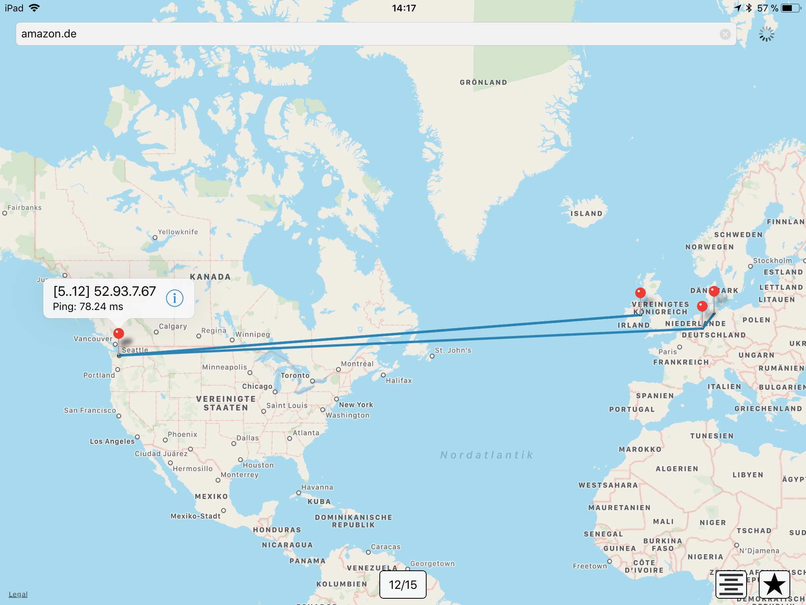
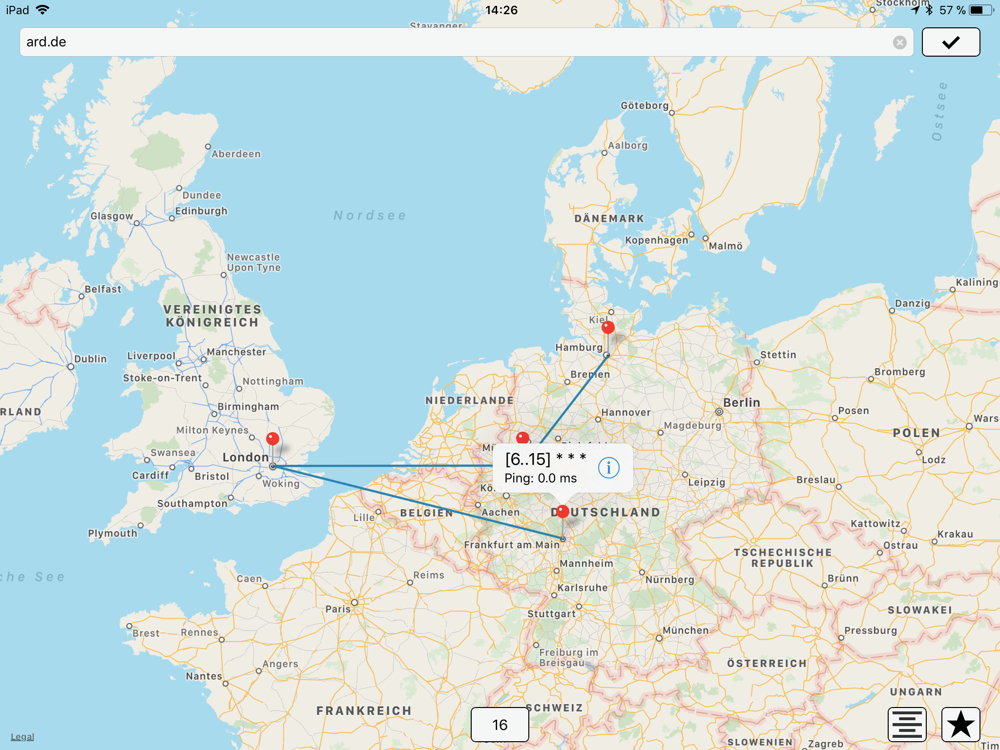
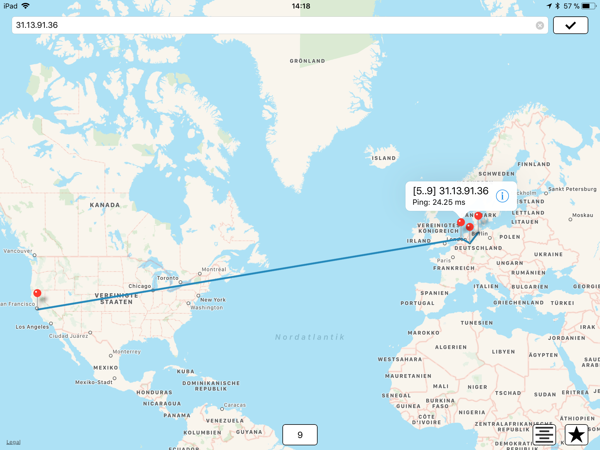
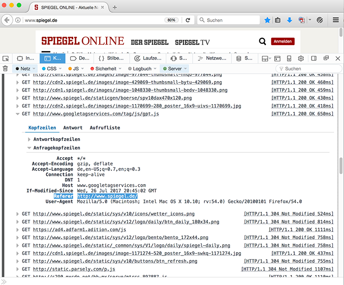
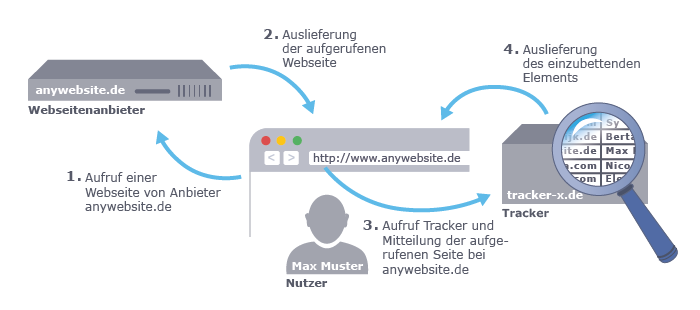
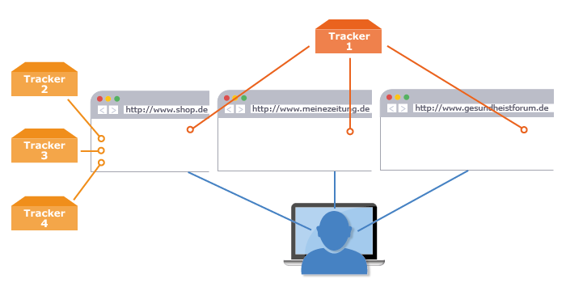

class: center, middle # Daten im Netz <img src="./images/cms.png"/> ## Dorina Gumm, Henning Brinkmann, 18.06.2018 --- # Agenda - Vorstellung: Chaos macht Schule --- # Vorstellung: Chaos Computer Club (CCC) - Seit 30+ Jahren eine Vereinigung von Hackern, Computerspezialisten und Datenschützern - Wir beschäftigen uns mit interessanter Technik. - Wir experimentieren mit ihren Möglichkeiten. - Wir untersuchen auch ihre Gefahren und Risiken für die Gesellschaft. --- # Vorstellung: Chaos macht Schule - Kreaturen, die sich dem Chaos Computer Club nahe fühlen - Kreaturen, die ihr Wissen zu IT-Themen und Netzpolitik verbreiten wollen an - Schüler - Lehrer - Eltern - Webseite: https://www.ccc.de/schule - Mailinglisten: schule@lists.ccc.de, cms@hamburg.ccc.de - oder den lokalen Erfa (Erfahrungsaustauschkreis)/Chaos-Treff kontaktieren --- # Umfrage - Wer hat kein Smartphone? - Wer benutzt Mail? - Wer benutzt Messenger? - Welche? - Welche Apps/Webseiten benutzt ihr? - Wer hat schon einmal programmiert? - Was? App, Webapp - Welche Programmiersprache? - Wer hat eine eigene Webseite? - Was läuft darauf? --- name: internet # Was ist das Internet? --- template: internet Bild: Sichere Email: was ist eigentlich? --- template: internet ## traceroute (amazon.de)  --- template: internet ## traceroute (ard.de)  --- template: internet ## traceroute (facebook)  --- template: internet ## Email-Spiel --- template: internet  --- name: tracking # Tracking --- template: tracking  --- template: tracking  --- # Welche Daten gebe ich preis? -- - alles was man ins Benutzerprofil beim Dienstanbieter schreibt - Adresse, Name, Geburtsdatum, Geschlecht - in Sozialen Netzen - Freunde - Interessen, Vorlieben - Bilder, Videos - Verhalten - Verweildauer - Bewertungen (Likes, Daumen hoch/runter) - Mobilfunk - Mobilfunknetz muss wissen in welcher Zelle ein Telefon ist, damit es angerufen werden kann oder Daten austauschen kann - Bewegungsprofil kann erstellt werden - Malte Spitz: http://www.zeit.de/datenschutz/malte-spitz-vorratsdaten - Verkehrsbeobachtung - Autos --- # Was macht der Anbieter mit den Daten? - verkaufen - Adressen - abgeleitete Daten (Kaufverhalten, Vorlieben, Scores, Kreditwürdigkeit) - Werbung - Wer bekommt welche Werbung? Tochter bekommt Coupons für Windeln, obwohl der Vater "weiß", dass seine Tochter nicht schwanger ist. Ist sie aber doch. Target leitet das aus geändertem Kaufverhalten ab. [New York Times, 19.02.2012](http://www.nytimes.com/2012/02/19/magazine/shopping-habits.html?pagewanted=1&_r=1&hp) - passende Nachrichten filtern - nützlich: Ich bekomme nur Nachrichten, die mich interessieren. - schlecht: Filterblasen, Echokammer --- name: datenschuetzen # Wie schütze ich meine privaten Daten? --- template: datenschuetzen ## Datensparsamkeit - Möglichst nur Daten preisgeben, die für den Dienst nötig sind. - mehrere Identitäten benutzen - nicht den eigenen Namen benutzen - eine eindeutige E-Mail-Adresse pro Dienst (für Fortgeschrittene) --- template: datenschuetzen ## Datensicherheit - Virenschutz - Backups - USB-Sticks nicht tauschen - nur geprüfte Programme installieren - nicht jeden Link klicken - Verschlüsseln (für Fortgeschrittene) - https:// - Mails: GPG, S/MIME - Festplatte verschlüsseln - Firmwarepasswort setzen --- template: datemschuetzen ## Umgang mit Passwörtern - Für jeden Dienst ein eignes Passwort - sichere Passwörter - 12+ Zeichen - Buchstaben, Zahlen, Sonderzeichen - Sprachen mischen - Beispiele - soya-quirk-newark-dogfight-eddy - hZzKnBqfom=HD9U6U@sn - Passwort-Manager - Schulterblick beim Eingeben von Passwörtern - Weggucken bei Passwörtern von Anderen --- class: middle, center .huge[ Fragen? ]